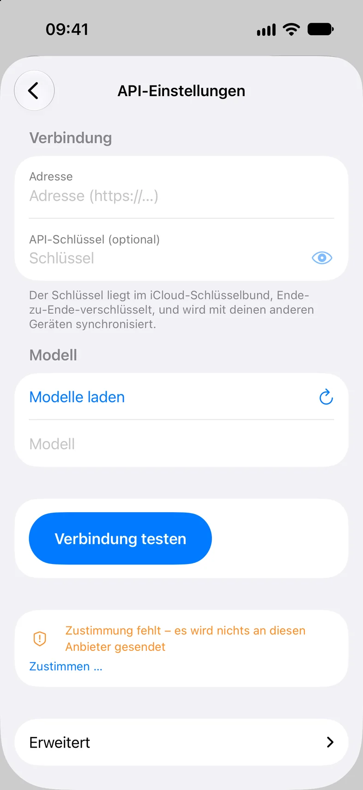

KI einrichten
Drei Wege – du entscheidest, wo deine Anfragen verarbeitet werden.
- Apple-KI auf dem GerätFür kompatible Geräte mit Apple Intelligence.
- Eigener API-SchlüsselFür größere Modelle eines Anbieters deiner Wahl.
- Lokaler ServerFür ein Modell auf deinem Mac oder Server im Heimnetz.
Apple-KI auf dem Gerät
Für KI-Verarbeitung auf dem Gerät nutzt M-Projekt Apple Intelligence.
Schritt 1: Apple Intelligence in den iOS-Einstellungen unter „Apple Intelligence & Siri“ einschalten.
Schritt 2: In M-Projekt Einstellungen › KI-Assistent öffnen.
Schritt 3: Modus „Apple“ wählen. Fertig – Vorschläge erscheinen in Heute und im Eingang.
Voraussetzung: ein Gerät mit Apple Intelligence und iOS 27.

Eigener API-Schlüssel
Nutze ein Modell eines Anbieters, bei dem du ein Konto hast. Wähle ein Preset, etwa OpenAI, Anthropic oder Google Gemini, oder trage einen eigenen OpenAI-kompatiblen Endpunkt ein.
Schritt 1: Einstellungen › KI-Assistent › Modus „Eigene API“.
Schritt 2: Adresse eintragen (beginnt mit https://) und den API-Schlüssel einfügen. Die App speichert den Schlüssel im Schlüsselbund. Bei aktivem iCloud-Schlüsselbund kann er mit deinen Geräten synchronisiert werden.
Schritt 3: „Modelle laden“ tippen und ein Modell wählen.
Schritt 4: „Verbindung testen“. Vor der ersten Übertragung deiner Inhalte an einen externen Anbieter fragt M-Projekt nach deiner Zustimmung.
Der Anbieter kann eigene Gebühren erheben. Den Chatverlauf speichert die App lokal.

Lokaler Server
Betreibe ein Modell selbst, zum Beispiel mit Ollama oder LM Studio auf einem Mac im selben Netzwerk.
Schritt 1: Auf dem Server ein Modell starten, das eine OpenAI-kompatible Schnittstelle anbietet (Ollama: Port 11434, Pfad /v1).
Schritt 2: In M-Projekt Einstellungen › KI-Assistent › „Eigene API“ wählen und die Adresse eintragen, z. B. http://mac-mini.local:11434/v1. Ein Schlüssel ist meist nicht nötig.
Schritt 3: Zugriff auf das lokale Netzwerk erlauben, wenn iOS danach fragt.
Schritt 4: „Modelle laden“, Modell wählen, „Verbindung testen“.
Deine Daten verlassen dein Heimnetz nicht.

Einwilligung pro Adresse und Zweck
Der Dialog zeigt die Empfängeradresse, den Zweck und welche Inhalte M-Projekt überträgt. Die Erlaubnis lässt sich in den Einstellungen widerrufen. Details stehen in der Datenschutzerklärung.